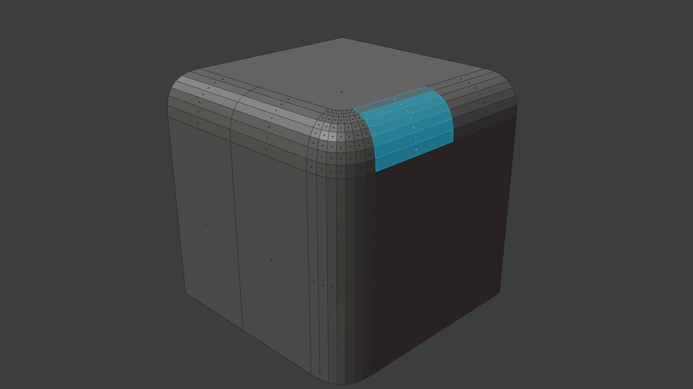

Refuse
shortcut yr edit mode
Refuse is a quick way, to Unfuse and Fuse right after.
For all practical purposes, this enables you to edit existing Fuse/Bevel/Bridge surfaces.
Keep in mind
While the initial segments for the refuse are determined automatically, the tension is currently not and will be set to its default value of 0.7 or the value you've chosen the last time you ran the Refuse tool in your current session.
Selection
Selection requirements are the same as for the Unfuse tool:
Poly strip - a row of polygons - across the Fuse/Bevel/Bridge surface.
The best way to select this is by using the Pick Shortest Path tool via Ctrl + Select Mouse.
If there are Ngons on both sides, you can be even faster by loop selecting - via Alt + Select Mouse - while pointing at a rail edge of the Fuse/Bevel/Bridge surface.
 poly strip across fuse/bevel/bridge surface
Note
Refuse will automatically expand the selection to the entire Fuse/Bevel/Bridge surface.
If it runs into triangles or ngons, it will abort.
See Quad Corner for how to deal with triangular Bevel corners.
Keep in mind
You currently can not select the entire bevel surface on your own to refuse, it has to be a poly strip going across.